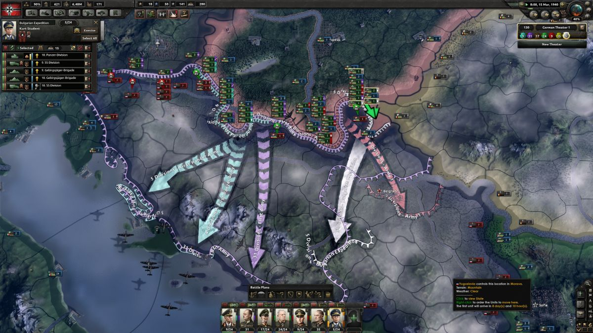

Fejlesztők, és Követelmények
-

- Johan Andersson
- Dan Lind
- Mattias Lilja
- Tomasz Kowalczyk
- Dan Lind
- Thomas Johansson
- Henrik Fåhraeus
- Linda Kiby
- Pernilla Sparrhult
- Johan Lerström
Fejlesztők
Követelmények
| Követelmények | Cpu | Ram | operációs rendszer | videó kártya | tárhely |
|---|---|---|---|---|---|
| minimális | Intel Core 2 Quad Q9400 @ 2.66 GHz / AMD Athlon II X4 650 @ 3.20 GHz | 4 GB | Windows 7 64-bit vagy újabb | ATI Radeon HD 5850 or NVIDIA GeForce GTX470 with 1GB VRAM | 2 GB |
| ajánlott | Intel Core i5 750 @ 2.66 GHz / AMD Phenom II X4 955 @ 3.20 GHz | 4 GB | Windows 7 64-bit vagy újabb | ATI Radeon HD 6950 or NVIDIA GeForce GTX570 with 2GB VRAM | 2 GB |